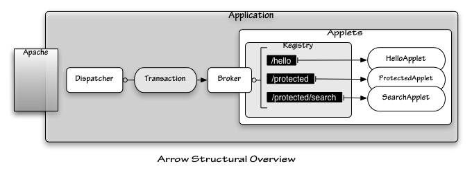

Arrow: Tutorial: Introduction
Overview
Arrow is an application server that is designed somewhat like a J2EE servlet container, but using Ruby as the language of implementation instead of Java. There are some differences, of course, but developers familiar with the J2EE servlet specification will notice some similarities.
In the Arrow framework, applications are made up of four basic parts: a Dispatcher, a Broker, one or more Applets, and Transactions which are wrapped around incoming requests.
The Basic Parts
An Arrow application looks conceptually something like this:

- Dispatcher
- The Dispatcher is the actual mod_ruby request handler that is invoked by Apache; it loads the configuration, sets up the Broker, and reloads the configuration if it has changed since the last time it was read, as well as creating Transaction objects for incoming requests and rendering the resulting output.
- Transaction
- The Transaction is created by the Dispatcher, and then passed to the Broker for handling. It encapsulates the incoming request, providing easy access to request values, configuration values, session data, and validated query arguments.
- Broker
- The Broker decides how Transaction objects get handled by loading and building a registry of Applet objects.
- Registry
- This is a structure inside the Broker which keeps track of the registered applet objects by associating them with a URI.
- Applets
- Applets are objects which handle user requests, and define the basic logic of different parts of the application.